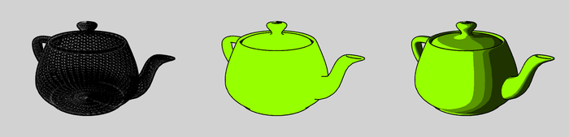

Stars 006 - dark teapot
Wed, Aug 23, 2017Not only does commit 91b838a bring a completely rendered monkey, there’s now shading and teapots!
Each vertex of the model should come with a normal, which represents the angle the surface is facing, at that vertex. The shading itself isn’t very hard once you’ve loaded the normals.
The amount of shadow is calculated by combining the direction of the sunlight and the vertex’ normal.
What took me way too long to get here was a bug loading the .obj file.
It turns out .obj files specify their faces using 1-indexing. 1-indexing!
So the code change to go from a completely broken state to a working state only took subtracting one in one place and several hours of frustration.
Anyways, here’s what the inside of a monkey looks like:
And this is the monkey, properly shaded, from the outside:
The next step is to try to implement cel-shading, which gives a cartoon-like impression, using only several shades for each shadow:
